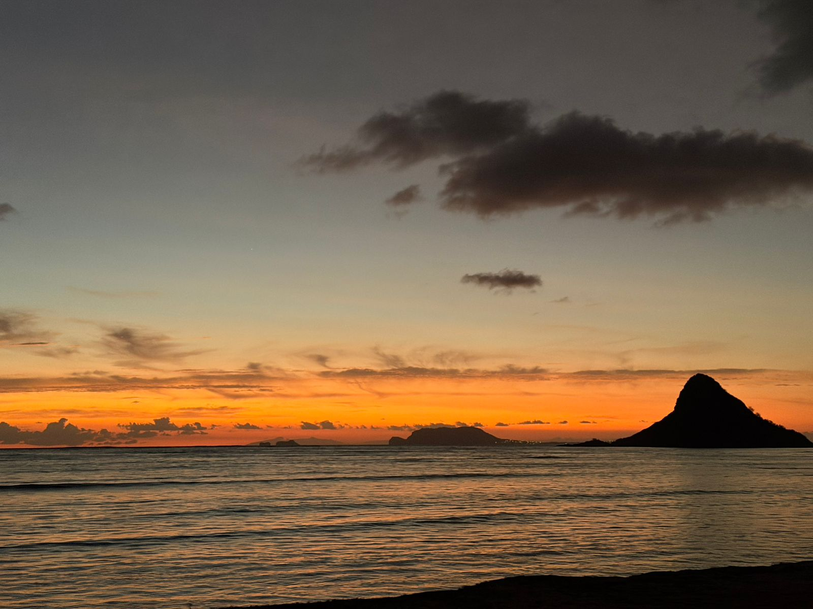
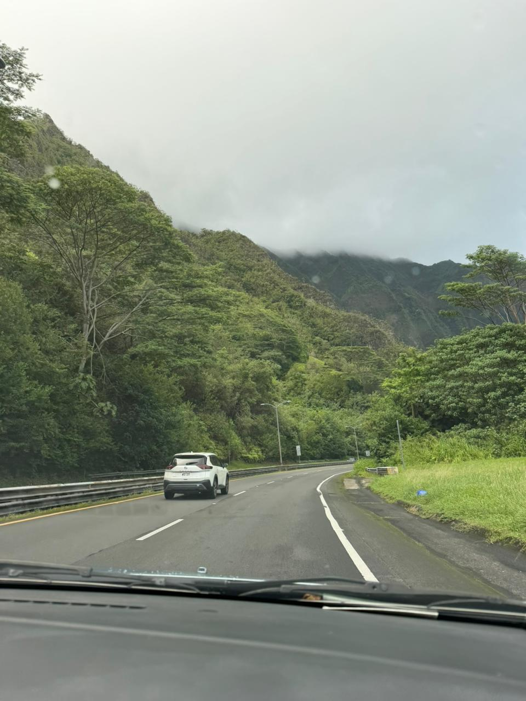

Photography
I love finding light and moments — I shoot mostly with my phone and a basic mirrorless camera. Below are some photos I took recently with short notes on the camera settings and the thought behind each shot.
Gallery

Photo 1: Sunrise over the coast — 1/250s, f/4.0, ISO 100. Shot during golden hour; I used a low angle to include foreground rocks.

Photo 2: Street portrait — 1/125s, f/2.8, ISO 200. Focus on subject car, background slightly blurred for separation.
Techniques & Tips
I prefer natural light, aim for simple compositions, and check my histogram after each shot. I also keep a short notes file with settings for each trip.